Webbramverk, 1DV450
Linnéuniversitetet, vt 2015
Ruby on Rails I
 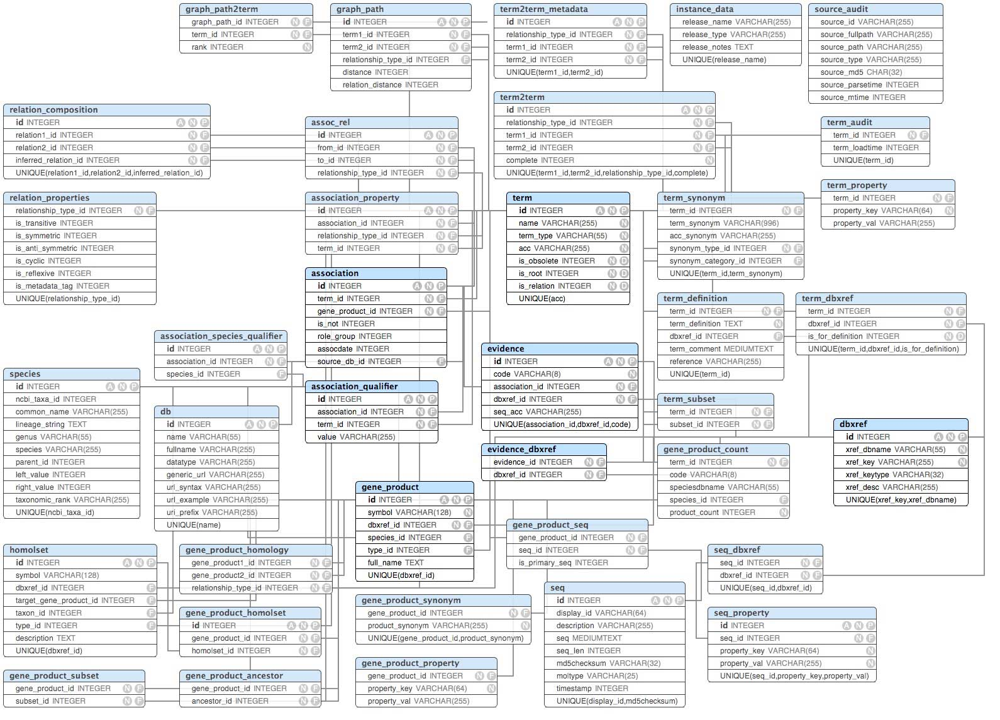
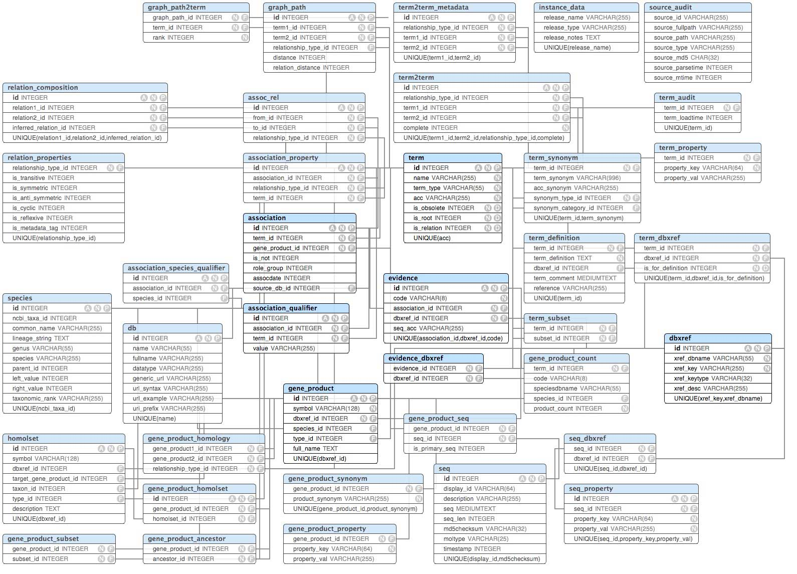
Datalagring i Ruby on Rails
- Tre databaser (development, test, production)
- Default SQLite3 (rekommenderas endast vid utveckling och test)
- mySQL, postgreSQL (produktion)
- Intelligensen hos modellen inte i databasen
- Active Record - Med relationsdatabaser i tanken

Foto cc by:
http://www.flickr.com/photos/fourthfloor/
Vad är Active Record?
Active record ett design-pattern som kan implementeras av olika språk/ramverk (Martin Fowler, 2003)
Object-relational mapping (ORM)
Associations - Kopplingar mellan modeller
Validering
ActiveRecord Query - Databasfrågor på ett objektorienterat sätt
Convention over configuration
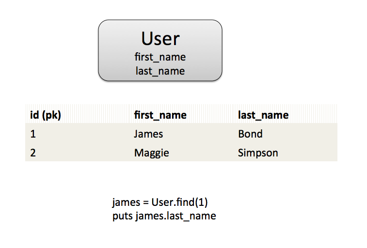
Resurs:
http://guides.rubyonrails.org/active_record_basics.html
Convention over configuration - Model
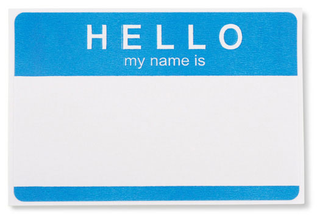
Klassnamn: Order
Filnamn: /app/models/order.rb
Tabellnamn: orders
Primärnyckel: id
Främmande nyckel: customer_id
Kopplingstabell: items_orders
Naming Conventions i Ruby on Rails:
http://itsignals.cascadia.com.au/?p=7

Kort om tester
- Egen oberoende databas för testdata
- Fixures
- Unit test - Models
- Functional test - Controllers, Views
- Integration test - Applikationens flöde
Foto by cc:
StockMonkeys.com

Foto cc by:
http://www.flickr.com/photos/johnroyer/
Migrate?
Scriptfil som skapar/ändrar databasen
Datamodellen kan ändras under resans gång
Migreringsfiler döps med timestamp, varje förändring bör ha en egen fil
- rake db:migrate - Kör migrationer som inte körts ännu (skapar db om inte finns)
- rake db:rollback STEP=3 - Rullar tillbaka i historiken
- rake db:drop - Tar bort databasen
- rake db:create - Skapar databasen utifrån migreringsfilerna
- rake db:setup - db:create, db:schema:load, db:seed
- rake db:reset - db:drop, db:setup
- rake db:migrate RAILS_ENV=production
Modifierad migrationsfil
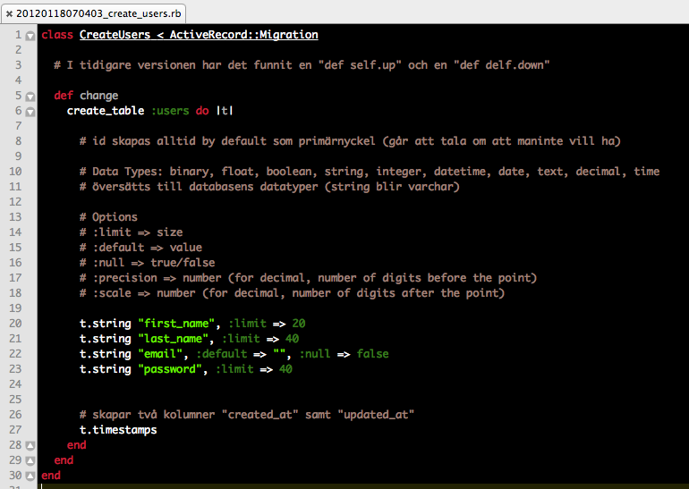
Active Record Query Interface
- Hur jobbar vi med data i en railsapplikation?
- rails console
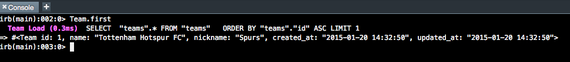
Seeds and fixures
- Fyll på med data - läses in vid migrering
- Seeds = development, production
- db/seeds.rb
- fixures - testning (vid varje testkörning)
Definiera relationer mellan objekten
Active Record är gjort för relationsdatabaser
"Ett lag har flera spelare"
Team.find(1).players # Ge mig första lagets alla spelare
En relation defineras i båda modellklasserna
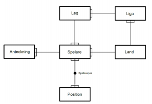
One-to-one (1:1)
"Classroom has_one Smartboard"
"SmartBoard belongs_to Classroom"
Främmande nyckel hamnar i Smartboard - tabellen, Classroom äger relationen (kan vändas - designfråga)
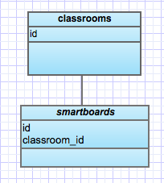
One-to-one (1:1)
# Modellklassen för Classroom (eg. app/modells/classroom.rb)
class Classroom < ActiveRecord::Base
has_one :smartboard # singular (det läses ju så!)
end
# Modellklassen för Smartboard
class Smartboard < ActiveRecord::Base
belongs_to :classroom
end
# Vi har nu en metod "smartboard" i vårt Classroom-objekt (starta om rails console)
Classroom.find(1).smartboard = Smartboard.new
One-to-many (1:n)
"Teacher has_many Courses"
"Course belongs_to Teacher"
Främmande nyckel hamnar i Courses
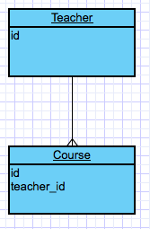
One-to-many (1:n)
# Modellklassen för Teacher
class Teacher < ActiveRecord::Base
has_many :courses # plural
end
# Modellklassen för Course
class Course < ActiveRecord::Base
belongs_to :teacher #singular
end
One-to-many coding
# Vi kan plocka ut en array med courses som en teacher har
t = Teacher.find_by_id(1)
# Assocciationen ger oss metoden courses (plural, array med course-objekt)
# returnerar en collectionproxy
t.courses
# Teacher får en ny course (append operator)
t.courses << Course.new
# Ta bort en Course (objectet course)
t.courses.delete(course)
t.courses.size
t.courses.empty?
Foto cc by:
http://www.flickr.com/photos/johnroyer/
Many-to-many (m:n)
"Students has_and_belongs_to_many courses"
"Course has_and_belongs_to_many students"
Vi behöver två främmande nycklar d.v.s. en extra kopplingstabell
courses_students, alfabetisk ordning på namnet
Skapa en migration som skapar kopplingstabellen (med de två nycklarna)
create_join_table :courses, :students
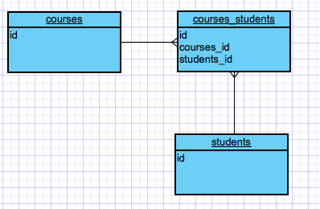
Rails console - Many-to-many
# Modellklassen för Student
class Student < ActiveRecord::Base
has_and_belongs_to_many :courses
end
# Modellklassen för Course
class Course < ActiveRecord::Base
has_and_belongs_to_many :students
end
Many-to-many coding
# Samma som tidigare exempel men dubbelriktat
s = Student.new
c = Course.new
c.students << s
s.courses # returnerar en array med de kurser studenter har (objectet c)
http://guides.rubyonrails.org/association_basics.html
Many-to-many (m:n) - Complex
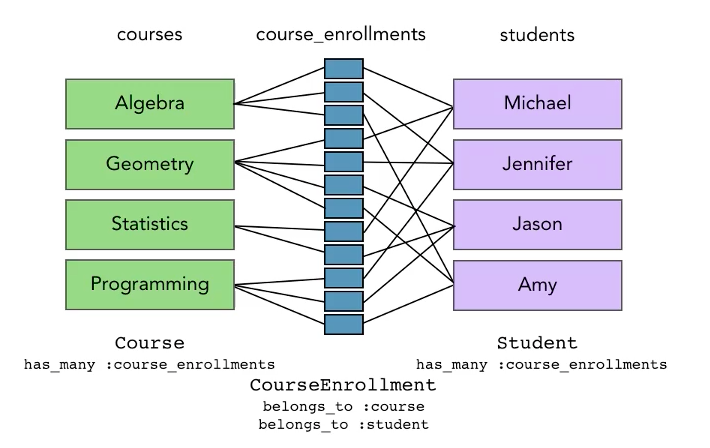
Generera upp en egen model som blir en rikare kopplingstabellen med mer information
än bara nycklar
 Denna presentation är licensierat under en
Creative Commons Erkännande 3.0 Unported Licens. (Där inte annat anges)
Denna presentation är licensierat under en
Creative Commons Erkännande 3.0 Unported Licens. (Där inte annat anges)